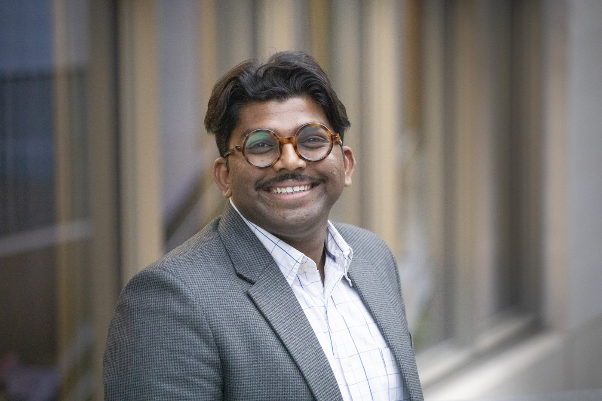

Sangeeth Selvaraju
Policy Fellow (Sustainable Finance) at the Grantham Research Institute on Climate Change and the Environment, London School of Economics and Political Science.
Sangeeth works on sustainable finance and on industrial decarbonisation in emerging markets and developing economies. He also works on the intersection of trade and climate, particularly EU–India relations.
Latest publications
Video
Sangeeth Selvaraju shares key priorities for India's net zero transition at the ET India Net Zero Forum 2026.
Contact
For enquiries, see the contact page, or the Grantham profile.